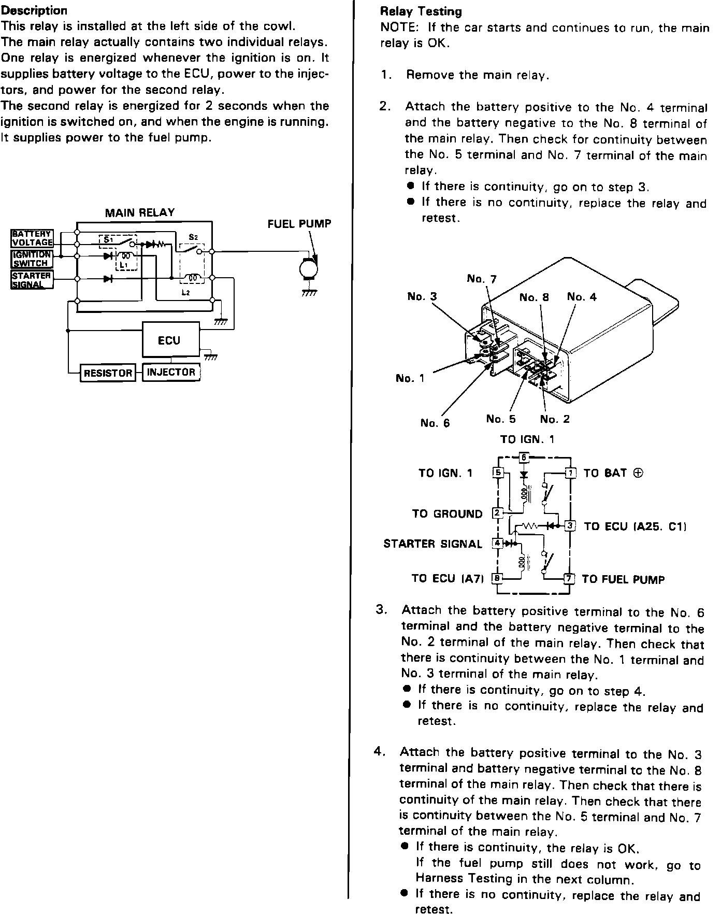
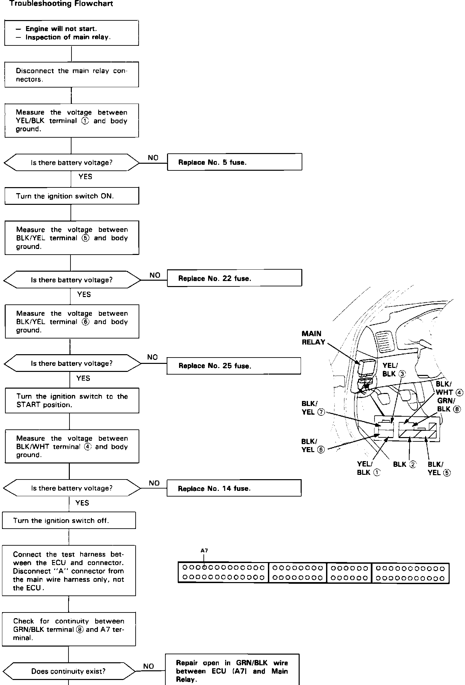

<!DOCTYPE html>
<html>
  <head>
    <title>Main Relay — 1991 Acura Legend Coupe V6-3206cc 3.2L SOHC FI Service Manual | Operation CHARM</title>
    <meta name='description' content="Detailed repair manual for the 1991 Acura Legend Coupe V6-3206cc 3.2L SOHC FI.">
    <link rel='stylesheet' href="../style.css">
    <meta name='viewport' content='width=device-width, initial-scale=1.0' />
  </head>
  <body>
    <div class='theme-colors header'>
      <div class='branding'><b>Operation CHARM</b>: Car repair manuals for everyone.</div>
<div class=breadcrumbs><a class='breadcrumb-part' href="../">Home</a> <b>&gt;&gt;</b> <a class='breadcrumb-part' href="../Acura/">Acura</a> <b>&gt;&gt;</b> <a class='breadcrumb-part' href="../Acura/1991/">1991</a> <b>&gt;&gt;</b> <a class='breadcrumb-part' href="../index.html">Legend Coupe V6-3206cc 3.2L SOHC FI</a> <b>&gt;&gt;</b> <a class='breadcrumb-part' href="0.html">Repair and Diagnosis</a> <b>&gt;&gt;</b> <a class='breadcrumb-part' href="0.html#Powertrain%20Management/">Powertrain Management</a> <b>&gt;&gt;</b> <a class='breadcrumb-part' href="0.html#Powertrain%20Management/Computers%20and%20Control%20Systems/">Computers and Control Systems</a> <b>&gt;&gt;</b> <a class='breadcrumb-part' href="0.html#Powertrain%20Management/Computers%20and%20Control%20Systems/Relays%20and%20Modules%20-%20Computers%20and%20Control%20Systems/">Relays and Modules - Computers and Control Systems</a> <b>&gt;&gt;</b> <a class='breadcrumb-part' href="428.html">Main Relay (Computer/Fuel System)</a> <b>&gt;&gt;</b> <a class='breadcrumb-part' href="428.html#Testing%20and%20Inspection/">Testing and Inspection</a> <b>&gt;&gt;</b> <a class='breadcrumb-part' href="5270.html">Main Relay</a></div></div>
<div class='main'>
<h1>Main Relay</h1><h3>Main Relay Testing:</h3><div class='oxe-image'></div><br><br><br><h3>sT=Main Relay Harness Testing:</h3><div class='oxe-image'></div><br><br><br><br><br>The <a href="34.html">main relay</a> contains two individual relays. One relay is energized whenever the ignition is turned on. It supplies power to the <a href="32.html">ECU</a>, injectors and power for the second relay. The second relay is energized for 2 seconds when the ignition is turned on it also supplies power to the fuel pump when the engine is running.</div>
<div class="theme-colors footer">
  <i>pro multis</i> · <a href="../about.html">About Operation CHARM</a>
</div>
<script src="../script.js"></script>
</body>
</html>
